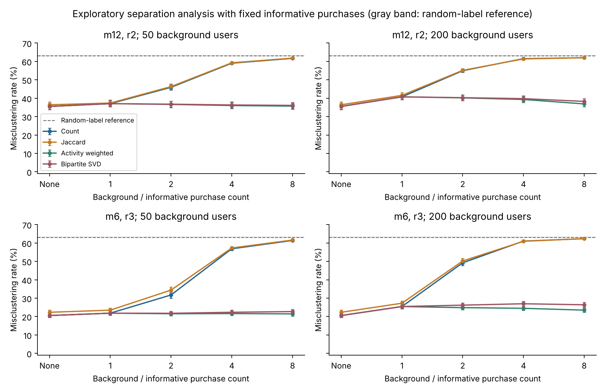
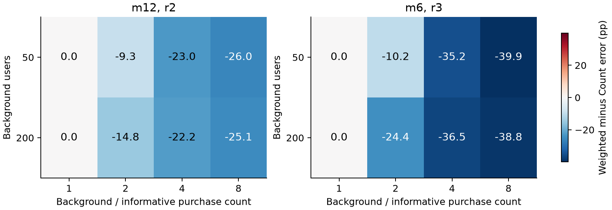
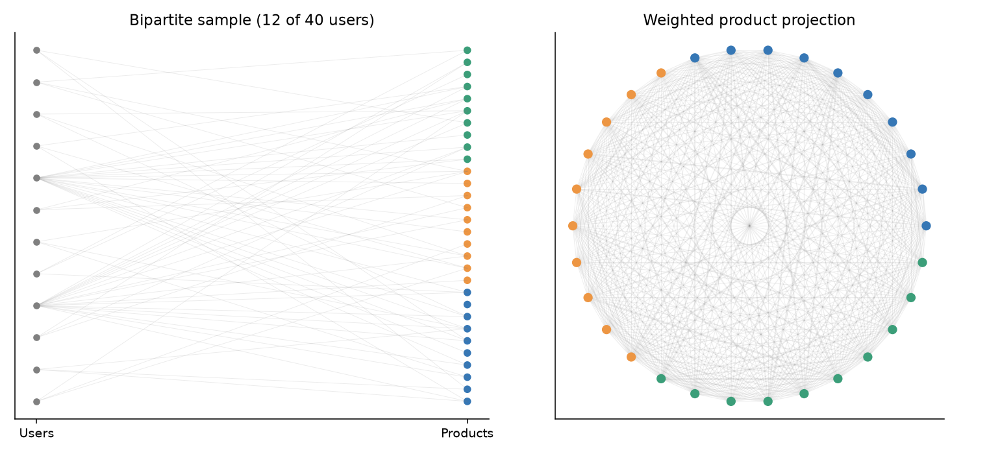

A SIMULATION STUDY OF PRODUCT NETWORKS
From Purchases
to Communities
Buying more can reveal a community.
It can also obscure one.
We study how user activity and preference breadth shape product networks, and when reducing the influence of active buyers helps community recovery.
Explore the results01 / THE QUESTION
Should frequent buyers
count less?
A buyer purchasing d distinct products contributes d(d − 1)/2 product pairs. A few active buyers can dominate a projected product network.
But their influence may be useful. If they favor a category, their purchases help reveal it. If they buy broadly with no category preference, they add connections without expected category contrast.
Our question is whether activity weighting suppresses unwanted background or removes useful evidence.
02 / EXPLORE THE RESULTS
Whose activity matters?
Misclustering rate measures the fraction of products assigned to the wrong category after label matching. Lower is better.
Bars show 95% Monte Carlo confidence intervals for means over 100 datasets. Total purchases are matched across activity distributions. The r=2 grid is the frozen main study; the r=3 and r=4 grids are additional exploratory analyses designed after the r=2 results.
| Activity heterogeneity | Count | Jaccard | Weighted | Bipartite SVD |
|---|
“Focused” means a preferred-category sampling weight of 2 versus 1 elsewhere. “Active users broad” sets that ratio to 1 for the most active 20%. High heterogeneity at mean 12 means 80% buy 2 products and 20% buy 52. At mean 6, the counts are 1 and 26.
03 / THE MAIN FINDING
Activity is not a measure
of information quality.
In the frozen r=2 main study, with focused preferences and high heterogeneity at mean 12, weighting raises error from 13.04% to 48.60%. The paired difference favors Count by 35.57 percentage points, with a 95% interval of 34.14–36.99 points.
With broad active users at medium heterogeneity, weighting helps modestly: 62.60% to 60.23%, both close to the error of random labels (about 63%). At high heterogeneity, the four methods remain at that level. Downweighting cannot replace missing informative purchases; the supplement below holds informative purchases fixed to isolate the background effect.
EXPLORATORY SUPPLEMENT / ADDED AFTER THE MAIN RESULTS
Keep the information.
Then add background.
These additional analyses were designed after inspecting the r=2 main results and external exploratory descriptions. The original proposal and frozen main results remain unchanged. Fresh runs use the original numerical environment and separately recorded seeds.
Fixed information, added background. With m=12 and r=2, 50 background users buying 48 products each raise Count error to 59.05%, while Weighted gives 36.02%. Without background, both give 35.53%.
Preference sensitivity at r=3. At mean 12, medium heterogeneity, and broad active users, Count gives 62.46%, Weighted 34.77%, and SVD 38.00%. At r=4, the same condition gives Count 61.05% and Weighted 9.55%. These are exploratory results, not replacements for the r=2 study.


All supplementary methods share a k-means seed within each dataset. When D=m, Count and Weighted have the same normalized matrix; the shared seed verifies their equivalence. The dashed 63% line in the results explorer above is only an approximate random-label reference. In these supplementary experiments, a method-specific chance reference uses 20 permutations of the true labels per dataset, with optimal label matching repeated; we do not assume a fixed 63% random baseline or import an SBM detection threshold.
04 / HOW WE TESTED IT
One dataset.
Four representations.
Each main-study dataset has 1,000 users, 300 products, and 3 known product categories. We cross three activity distributions, two preference settings, and two purchase densities.
01 Count Shared purchasers
Every shared buyer adds 1 to a product pair. We normalize the product network, extract its leading spectral embedding, and cluster the products.
W(i,j) = Σ B(u,i) B(u,j)02 Jaccard Overlap relative to union
Shared buyers are divided by buyers of either product. This adjusts overlap for product purchasing frequency, then uses the same spectral procedure.
W(i,j) = shared / (buyers(i) + buyers(j) − shared)03 Activity weighted Less influence per active buyer
A user who buys d products contributes 1/(d−1) to each pair. Their total pair weight grows linearly instead of quadratically. Users buying fewer than two products contribute no pairs.
W(i,j) = Σ B(u,i) B(u,j) / (d(u) − 1)04 Normalized bipartite SVD Direct matrix representation
We normalize the user-product matrix by user and product degrees, extract its leading three right singular vectors, normalize embedding rows, and cluster products. This is an inspired baseline, not a full reproduction of an original co-clustering algorithm.
M = Du^(−1/2) B Dp^(−1/2)Every method uses the true K=3 and k-means with 20 starts. Product projection diagonals are removed; the SVD representation retains the implicit effect of its Gram diagonal. Seeds and software versions are recorded.

05 / SCOPE AND LIMITS
A controlled comparison.
The experiments use synthetic data, equal category sizes, equal product weights within categories, and a known number of communities. We do not claim the same ranking for real purchase data or every SVD method.
Count and Jaccard have very similar average recovery here, but do not always return the same partition. At low activity heterogeneity, Count and Weighted have the same normalized network in exact arithmetic.
Projected edges are dependent. Confidence intervals describe Monte Carlo precision under this simulation model, and multiple comparisons are unadjusted. The sparse, high-heterogeneity broad-active setting has no expected category contrast in the pair projections.
06 / READ AND REPRODUCE
The evidence is available.
Read the complete methodology and results, or reproduce the simulations from the recorded settings and seeds.
The source package includes the generator, methods, tests, dependency lockfile, manifests, and result tables. Raw purchase matrices can be regenerated from recorded seeds.